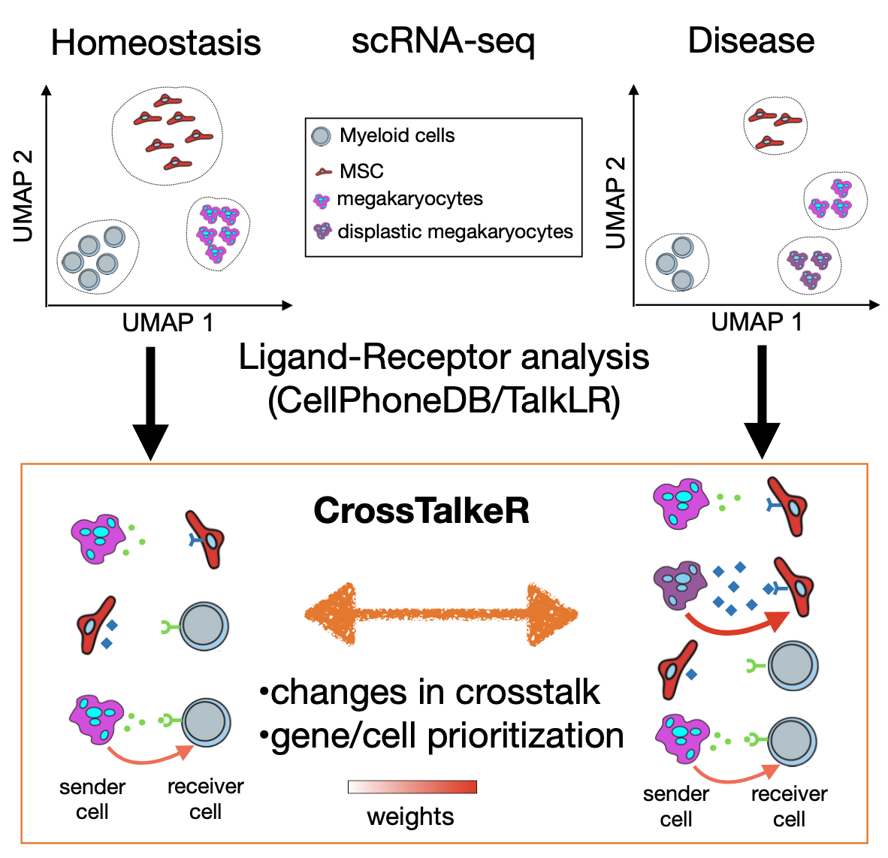

James S. Nagai1, Nils B. Leimkühler2, Michael T. Schaub 3, Rebekka K. Schneider4,5,6, Ivan G. Costa1*
1Institute for Computational Genomics, Faculty of Medicine, RWTH Aachen University, Aachen, 52074 Germany
2Department of Hematology and Stem Cell Transplantation, University Hospital Essen, Germany
3Department of Computer Science, RWTH Aachen University, Germany
4Department of Cell Biology, Institute for Biomedical Engineering, Faculty of Medicine,RWTH Aachen University, Pauwelsstrasse 30, 52074 Aachen, NRW, Germany
5Oncode Institute, Erasmus Medical Center, Rotterdam, 3015GD, the Netherlands
6Department of Hematology, Erasmus Medical Center, Rotterdam, 3015GD, the Netherlands

Motivation: Ligand-receptor (LR) analysis allows the characterization of cellular crosstalk from single cell RNA-seq data. However, current LR methods provide limited approaches for prioritization of cell types, ligands or receptors or characterizing changes in crosstalk between two biological conditions.
Results: CrossTalkeR is a framework for network analysis and visualisation of LR networks. CrossTalkeR identifies relevant ligands, receptors and cell types contributing to changes in cell communication when contrasting two biological states: disease vs. homeostasis. A case study on scRNA-seq of human myeloproliferative neoplasms reinforces the strengths of CrossTalkeR for characterisation of changes in cellular crosstalk in disease state.
Install
You can install CrossTalkeR with the simple comands below:
install.packages("devtools")
devtools::install_github("https://github.com/CostaLab/CrossTalkeR", build_vignettes = TRUE)
require(CrossTalkeR)*Note: Please avoid to use the following characters in celltype name: ’_’ and ‘\’ *
Possible system dependencies
libudunits2-dev
libgdal-dev
gdal-bin
libproj-dev
proj-data
proj-bin
libgeos-dev
CrossTalkeR Plots examples and vignette
We provide in our vignette examples on how to analyse cell interactions from a human myelofibrosis single cell RNA-seq.
vignette('CrossTalkeR')References
[1] CrossTalkeR: Analysis and Visualisation of Ligand Receptor Networks preprintlink
[2]Heterogeneous bone-marrow stromal progenitors drive myelofibrosis via a druggable alarmin axis. link